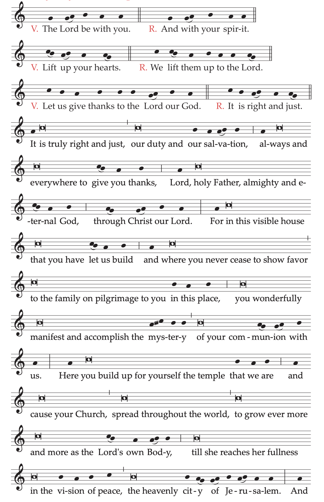
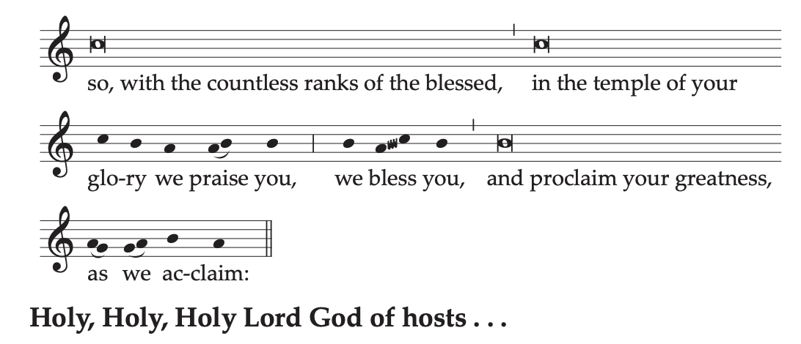

Common of the Dedication of a Church
The formularies of the Mass for the Dedication of a Church and of the Mass for the Dedication of an Altar are to be found among the Ritual Masses.
ON THE ANNIVERSARY OF THE DEDICATION
I. In the Church that was Dedicated
Entrance AntiphonPs 68 (67): 36
Wonderful are you, O God in your holy place.
The God of Israel himself gives his people strength and courage.
Blessed be God (E.T. alleluia)!
The Gloria in excelsis (Glory to God in the highest) is said.
Collect
O God, who year by year renew for us the day
when this your holy temple was consecrated,
hear the prayers of your people
and grant that in this place
for you there may always be pure worship
and for us, fullness of redemption.
Through our Lord Jesus Christ, your Son,
who lives and reigns with you in the unity of the Holy Spirit,
God, for ever and ever.
The Creed is said.
Prayer over the Offerings
Recalling the day when you were pleased
to fill your house with glory and holiness, O Lord,
we pray that you may make of us
a sacrificial offering always acceptable to you.
Through Christ our Lord.
Preface: The mystery of the Temple of God, which is the Church.


Text without music:
V. The Lord be with you.
R. And with your spirit.
V. Lift up your hearts.
R. We lift them up to the Lord.
V. Let us give thanks to the Lord our God.
R. It is right and just.
It is truly right and just, our duty and our salvation,
always and everywhere to give you thanks,
Lord, holy Father, almighty and eternal God,
through Christ our Lord.
For in this visible house that you have let us build
and where you never cease to show favor
to the family on pilgrimage to you in this place,
you wonderfully manifest and accomplish
the mystery of your communion with us.
Here you build up for yourself the temple that we are
and cause your Church, spread throughout the world,
to grow ever more and more as the Lord’s own Body,
till she reaches her fullness in the vision of peace,
the heavenly city of Jerusalem.
And so, with the countless ranks of the blessed,
in the temple of your glory we praise you,
we bless you and proclaim your greatness, as we acclaim:
Holy, Holy, Holy Lord God of hosts...
Communion AntiphonCf. 1 Cor 3: 16-17
You are the temple of God, and the Spirit of God dwells in you.
The temple of God, which you are, is holy (E.T. alleluia).
Prayer after Communion
May the people consecrated to you, O Lord, we pray,
receive the fruits and joy of your blessing,
that the festive homage
they have offered you today in the body
may redound upon them as a spiritual gift.
Through Christ our Lord.
Blessing at the End of Mass
May God, the Lord of heaven and earth,
who has gathered you today
in memory of the dedication of this church,
make you abound in heavenly blessings.
R. Amen.
And may he, who has willed that all his scattered children
be gathered together in his Son,
grant that you may become his temple
and the dwelling place of the Holy Spirit.
R. Amen.
Thus, may you be made thoroughly clean,
so that God may dwell within you
and you may possess with all the Saints
the inheritance of eternal happiness.
R. Amen.
And may the blessing of almighty God,
the Father, and the Son, ✠ and the Holy Spirit,
come down on you and remain with you forever.
R. Amen.
II. Outside the Church that was Dedicated
Entrance AntiphonCf. Rev 21: 2
I saw the holy city, a new Jerusalem,
coming down out of heaven from God
prepared like a bride adorned for her husband (E.T. alleluia).
Or:Cf. Rev 21: 3
Behold God’s dwelling with the human race.
He will dwell with them
and they will be his people,
and God himself with them will be their God (E.T. alleluia).
The Gloria in excelsis (Glory to God in the highest) is said.
Collect
O God, who from living and chosen stones
prepare an eternal dwelling for your majesty,
increase in your Church the grace you have bestowed,
so that by unceasing growth
your faithful people may build up the heavenly Jerusalem.
Through our Lord Jesus Christ, your Son,
who lives and reigns with you in the unity of the Holy Spirit,
God, for ever and ever.
Or:
O God, who were pleased to call your Church the Bride,
grant that the people that serves your name
may revere you, love you and follow you,
and may be led by you
to attain your promises in heaven.
Through our Lord Jesus Christ, your Son,
who lives and reigns with you in the unity of the Holy Spirit,
God, for ever and ever.
Prayer over the Offerings
Accept, we pray, O Lord, the offering made here
and grant that by it those who seek your favor
may receive in this place
the grace of the Sacraments
and an answer to their prayers.
Through Christ our Lord.
Preface: The mystery of the Church, the Bride of Christ and Temple of the Holy Spirit.
V. The Lord be with you.
R. And with your spirit.
V. Lift up your hearts.
R. We lift them up to the Lord.
V. Let us give thanks to the Lord our God.
R. It is right and just.
It is truly right and just, our duty and our salvation,
always and everywhere to give you thanks,
Lord, holy Father, almighty and eternal God.
For in your benevolence you are pleased
to dwell in this house of prayer
in order to perfect us as the temple of the Holy Spirit,
supported by the perpetual help of your grace
and resplendent with the glory of a life acceptable to you.
Year by year you sanctify the Church, the Bride of Christ,
foreshadowed in visible buildings,
so that, rejoicing as the mother of countless children,
she may be given her place in your heavenly glory.
And so, with all the Angels and Saints,
we praise you, as without end we acclaim:
Holy, Holy, Holy Lord God of hosts...
Communion AntiphonCf. 1 Pt 2: 5
Be built up like living stones,
into a spiritual house, a holy priesthood (E.T. alleluia).
Or:Cf. Mt 21: 13; Lk 11: 10
My house shall be a house of prayer, says the Lord:
in that house, everyone who asks receives, and the one who seeks finds,
and to the one who knocks, the door will be opened (E.T. alleluia).
Prayer after Communion
O God, who chose to foreshadow for us
the heavenly Jerusalem
through the sign of your Church on earth,
grant, we pray,
that, by our partaking of this Sacrament,
we may be made the temple of your grace
and may enter the dwelling place of your glory.
Through Christ our Lord.
Common of the Blessed Virgin Mary
These Masses are also used for celebrating the Memorial of the Blessed Virgin Mary on Saturday, and in Votive Masses of the Blessed Virgin Mary. In all the prayers, where the word “commemoration” is found, “memorial” may also be used, as appropriate.
I. In Ordinary Time
These formularies may be used in accordance with the norms, even in Lent, should a celebration of the Blessed Virgin Mary occur that is duly inscribed in a proper calendar.
1
Entrance Antiphon
Hail, Holy Mother, who gave birth to the King
who rules heaven and earth for ever.
Collect
Grant, Lord God, that we, your servants,
may rejoice in unfailing health of mind and body,
and, through the glorious intercession of Blessed Mary ever-Virgin,
may we be set free from present sorrow
and come to enjoy eternal happiness.
Through our Lord Jesus Christ, your Son,
who lives and reigns with you in the unity of the Holy Spirit,
God, for ever and ever.
Prayer over the Offerings
Receive, O Lord, we ask, the prayers of your people
with the sacrificial offerings,
that, through the intercession of Blessed Mary,
the Mother of your Son,
no petition may go unanswered,
no request be made in vain.
Through Christ our Lord.
Or:
May the humanity of your Only Begotten Son
come, O Lord, to our aid,
and may he, who at his birth from the Blessed Virgin
did not diminish but consecrated her integrity,
by taking from us now our wicked deeds,
make our oblation acceptable to you.
Through Christ our Lord.
Preface I of the Blessed Virgin Mary (for Votive Masses: and to praise, bless, and glorify your name in veneration of), or II.
Communion AntiphonCf. Lk 11: 27
Blessed is the womb of the Virgin Mary,
which bore the Son of the eternal Father.
Prayer after Communion
As we receive this heavenly Sacrament,
we beseech, O Lord, your mercy,
that we, who rejoice in commemorating the Blessed Virgin Mary,
may by imitating her
serve worthily the mystery of our redemption.
Through Christ our Lord.
2
Entrance Antiphon
Blessed are you, O Virgin Mary, who bore the Creator of all things.
You became the Mother of your Maker,
and you remain for ever Virgin.
Collect
Grant us, O merciful God,
protection in our weakness,
that we, who keep the Memorial of the holy Mother of God,
may, with the help of her intercession,
rise up from our iniquities.
Through our Lord Jesus Christ, your Son,
who lives and reigns with you in the unity of the Holy Spirit,
God, for ever and ever.
Prayer over the Offerings
As we honor the memory of the Mother of your Son,
we pray, O Lord,
that the oblation of this sacrifice
may, by your grace, make of us an eternal offering to you.
Through Christ our Lord.
Preface I of the Blessed Virgin Mary (for Votive Masses: and to praise, bless, and glorify your name in veneration of), or II.
Communion AntiphonLk 1: 49
He who is mighty has done great things for me,
and holy is his name.
Prayer after Communion
Having been made partakers of eternal redemption,
we pray, O Lord,
that we, who commemorate the Mother of your Son,
may glory in the fullness of your grace
and experience its continued increase for our salvation.
Through Christ our Lord.
3
Entrance AntiphonCf. Jdt 13: 18-19
Blessed are you, O Virgin Mary, by the Lord God Most High,
above all women on the earth;
for he has so exalted your name,
that your praise shall be undying on our lips.
Collect
As we venerate the glorious memory
of the most holy Virgin Mary,
grant, we pray, O Lord, through her intercession,
that we, too, may merit to receive
from the fullness of your grace.
Through our Lord Jesus Christ, your Son,
who lives and reigns with you in the unity of the Holy Spirit,
God, for ever and ever.
Prayer over the Offerings
We offer you the sacrifice of praise, O Lord,
as we rejoice in commemorating the Mother of your Son;
grant, we pray,
that through this most holy exchange
we may advance towards eternal redemption.
Through Christ our Lord.
Preface I of the Blessed Virgin Mary (for Votive Masses: and to praise, bless, and glorify your name in veneration of), or II.
Communion AntiphonCf. Lk 1: 48
All generations will call me blessed,
for God has looked on his lowly handmaid.
Prayer after Communion
Renewed with this heavenly food,
we humbly implore you, Lord,
that, having received your Son, born of the tender Virgin,
under sacramental signs,
we may profess him in words
and hold fast to him in deeds.
Who lives and reigns for ever and ever.
4
Entrance AntiphonCf. Ps 45 (44): 13, 15, 16
All the richest of the people long to see your face:
behind her, her maiden companions are escorted to the King;
her attendants are escorted to you amid gladness and joy.
Collect
Pardon the faults of your servants, we pray, O Lord,
that we, who cannot please you by our own deeds,
may be saved through the intercession
of the Mother of your Son and our Lord.
Who lives and reigns with you in the unity of the Holy Spirit,
God, for ever and ever.
Prayer over the Offerings
Accept, O Lord, the offerings we bring you
and grant that, enlightened by the Holy Spirit
and encouraged by the example of the Blessed Virgin Mary,
our hearts may always seek out and treasure the things that are yours.
Through Christ our Lord.
Preface I of the Blessed Virgin Mary (for Votive Masses: and to praise, bless, and glorify your name in veneration of), or II.
Communion Antiphon
Praise the Lord our God,
for in Mary his handmaid
he has fulfilled his promise of mercy to the house of Israel.
Prayer after Communion
Having received the Sacrament of salvation and of faith,
we humbly beseech you, O Lord,
that we, who devoutly honor the Blessed Virgin Mary,
may be worthy to share with her in the charity of heaven.
Through Christ our Lord.
5
Entrance AntiphonCf. Lk 1: 28, 42
Hail, Mary, full of grace, the Lord is with you.
Blessed are you among women,
and blessed is the fruit of your womb.
Collect
O God, who chose the Blessed Virgin Mary,
foremost among the poor and humble,
to be the Mother of the Savior,
grant, we pray, that, following her example,
we may offer you the homage of sincere faith
and place in you all our hope of salvation.
Through our Lord Jesus Christ, your Son,
who lives and reigns with you in the unity of the Holy Spirit,
God, for ever and ever.
Prayer over the Offerings
Receive, O Lord, the offerings of our devotion,
and grant that we, who celebrate
your Son’s work of boundless charity,
may, through the example of the Blessed Virgin Mary,
be confirmed in love of you and of our neighbor.
Through Christ our Lord.
Preface I of the Blessed Virgin Mary (for Votive Masses: and to praise, bless, and glorify your name in veneration of), or II.
Communion AntiphonCf. Ps 87 (86): 3; Lk 1: 49
Glorious things are spoken of you, O Virgin Mary,
for he who is mighty has done great things for you.
Prayer after Communion
Grant to your Church, O Lord,
that, strengthened by the power of this Sacrament,
she may eagerly walk in the pathways of the Gospel,
until she reaches the blessed vision of peace,
which the Virgin Mary, your lowly handmaid,
already enjoys eternally in glory.
Through Christ our Lord.
6
Entrance Antiphon
The rod of Jesse has blossomed;
the Virgin has brought forth one who is both God and man.
God has restored peace,
reconciling in himself the depths and the heights.
Collect
May the venerable intercession of Blessed Mary ever-Virgin
come to our aid, we pray, O Lord,
and free us from every danger,
so that we may rejoice in your peace.
Through our Lord Jesus Christ, your Son,
who lives and reigns with you in the unity of the Holy Spirit,
God, for ever and ever.
Prayer over the Offerings
We offer you, O Lord,
these offerings of conciliation and praise,
humbly asking that,
following the example of the Blessed Virgin Mary,
we may present our very selves
as a holy sacrifice pleasing to you.
Through Christ our Lord.
Preface I of the Blessed Virgin Mary (for Votive Masses: and to praise, bless, and glorify your name in veneration of), or II.
Communion AntiphonPs 45 (44): 3
Graciousness is poured out upon your lips,
for God has blessed you for ever more.
Prayer after Communion
Having nourished us with heavenly food, O Lord,
grant that, according to the example of the Blessed Virgin Mary,
we may serve you in purity of life
and magnify you, with her, in wholehearted praise.
Through Christ our Lord.
7
Entrance AntiphonCf. Lk 1: 47-48
Mary said: My spirit rejoices in God my Savior,
because the Lord has looked on his lowly handmaid.
Collect
O God, who were pleased to choose Blessed Mary
as the virginal chamber where your Word would dwell,
grant, we pray, that under her protection,
we may participate joyfully in her commemoration.
Through our Lord Jesus Christ, your Son,
who lives and reigns with you in the unity of the Holy Spirit,
God, for ever and ever.
Prayer over the Offerings
May the offerings your people make
in commemoration of Blessed Mary
be acceptable to you, O Lord,
for by her virginity she pleased you
and in humility conceived your Son, our Lord.
Who lives and reigns for ever and ever.
Preface I of the Blessed Virgin Mary (for Votive Masses: and to praise, bless, and glorify your name in veneration of), or II.
Communion AntiphonLk 2: 19
Mary treasured all these words,
reflecting on them in her heart.
Prayer after Communion
Having been made partakers of this spiritual food,
we pray, O Lord our God,
that, steadily imitating the Blessed Virgin Mary,
we may always be found intent on service of the Church
and may know the joys of doing your will.
Through Christ our Lord.
8
Entrance Antiphon
Happy are you, holy Virgin Mary, and most worthy of all praise,
for from you arose the sun of justice, Christ our God,
through whom we have been saved and redeemed.
Collect
Grant, we pray, almighty God, that your faithful,
who rejoice under the patronage of the most holy Virgin Mary,
may be freed by her motherly intercession
from all evils on earth
and merit the attainment of eternal joys in heaven.
Through our Lord Jesus Christ, your Son,
who lives and reigns with you in the unity of the Holy Spirit,
God, for ever and ever.
Prayer over the Offerings
Look, O Lord, upon the prayers and offerings of your faithful,
presented in commemoration of Blessed Mary, the Mother of God,
that they may be pleasing to you
and may confer on us your help and forgiveness.
Through Christ our Lord.
Preface I of the Blessed Virgin Mary (for Votive Masses: and to praise, bless, and glorify your name in veneration of), or II.
Communion AntiphonCf. Lk 1: 48
The Lord has looked on his lowly handmaid;
behold, henceforth all generations will call me blessed.
Prayer after Communion
Renewed by the Sacrament of salvation,
we humbly beseech you, Lord,
that we, who have honored in veneration
the memory of the Blessed Virgin Mary, Mother of God,
may merit to experience in perpetuity the fruits of your redemption.
Through Christ our Lord.
II. In Advent
Entrance AntiphonCf. Is 45: 8
Drop down dew from above, you heavens,
and let the clouds rain down the Just One;
let the earth be opened and bring forth a Savior.
Or:Cf. Lk 1: 30-32
The angel said to Mary: You have found favor with God.
Behold, you will conceive and bear a son,
and he will be called Son of the Most High.
Collect
O God, who willed that at the message of an Angel
your Word should take flesh
in the womb of the Blessed Virgin Mary,
grant that we, who pray to you
and believe her to be truly the Mother of God,
may be helped by her interceding before you.
Through our Lord Jesus Christ, your Son,
who lives and reigns with you in the unity of the Holy Spirit,
God, for ever and ever.
Or:
O God, who, fulfilling the promise made to our Fathers,
chose the Blessed Virgin Mary
to become the Mother of the Savior,
grant that we may follow her example,
for her humility was pleasing to you
and her obedience profitable to us.
Through our Lord Jesus Christ, your Son,
who lives and reigns with you in the unity of the Holy Spirit,
God, for ever and ever.
Prayer over the Offerings
Accept, O Lord, these offerings,
and by your power change them into the Sacrament of salvation,
in which, fulfilling the sacrifices of the Fathers,
is offered the true Lamb, Jesus Christ your Son,
born of the ever-Virgin Mary in a way beyond all telling.
Who lives and reigns for ever and ever.
Preface I of the Blessed Virgin Mary, or II. Preface II of Advent may also be used.
Communion AntiphonCf. Is 7: 14
Behold, a Virgin shall conceive and bear a son,
and his name will be called Emmanuel.
Prayer after Communion
May the mysteries we have received,
O Lord our God,
always show forth your mercy in us,
that we, who commemorate in faith the Mother of your Son,
may be saved by his Incarnation.
Who lives and reigns for ever and ever.
III. In Christmas Time
Entrance Antiphon
In childbirth she brought forth the King, whose name is eternal.
She keeps a mother’s joy with a virgin’s honor.
None like her was seen before, and none thereafter.
Or:
O Virgin Mother of God,
he whom the whole world cannot contain
cloistered himself within your womb, made man for us.
Collect
O God, who through the fruitful virginity of Blessed Mary
bestowed on the human race the grace of eternal salvation,
grant, we pray,
that we may experience the intercession of her,
through whom we were found worthy to receive the author of life,
our Lord Jesus Christ, your Son.
Who lives and reigns with you in the unity of the Holy Spirit,
God, for ever and ever.
Or:
O God, who willed that your Word, begotten from all eternity,
should come forth from the womb of the Blessed Virgin Mary,
grant, we pray, through her intercession,
that he may light up our darkness
with the splendor of his presence,
and from his fullness give us joy and peace.
Who lives and reigns with you in the unity of the Holy Spirit,
God, for ever and ever.
Prayer over the Offerings
As we celebrate the blessed days which you made sacred
by the Nativity of your Only Begotten Son,
born into time as the offspring of the Virgin Mary,
we pray, O Lord, that this oblation may sanctify us,
and may grant us new birth in him.
Who lives and reigns for ever and ever.
Preface I of the Blessed Virgin Mary, or II.
Communion AntiphonCf. Lk 11: 27
Blessed is the womb of the Virgin Mary,
which bore the Son of the eternal Father.
Prayer after Communion
Renewed by the Body and Blood of your incarnate Word,
we pray, O Lord, that these divine mysteries,
which we have joyfully received
as we commemorate the Blessed Virgin Mary,
may make us sharers for eternity in the divinity of your Son.
Who lives and reigns for ever and ever.
IV. In Easter Time
Entrance AntiphonCf. Ps 30 (29): 12
You have changed my mourning into dancing, O Lord,
and have girded me with joy, alleluia.
Collect
O God, who have been pleased to gladden the world
by the Resurrection of your Son our Lord Jesus Christ,
grant, we pray,
that through his Mother, the Virgin Mary,
we may receive the joys of everlasting life.
Through our Lord Jesus Christ, your Son,
who lives and reigns with you in the unity of the Holy Spirit,
God, for ever and ever.
Prayer over the Offerings
Receive, holy Father, this offering of our humility,
which we bring you with joy
as we commemorate the Blessed Virgin Mary,
and grant, we pray, that it may be for us,
who are joined to the sacrifice of Christ,
our consolation on earth and our eternal salvation.
Who lives and reigns for ever and ever.
Preface I of the Blessed Virgin Mary, or II.
Communion Antiphon
Rejoice, O Virgin Mother,
for Christ has risen from the tomb, alleluia.
Prayer after Communion
Renewed by this paschal Sacrament,
we pray, O Lord,
that we, who honor the memory of the Mother of your Son,
may show forth in our mortal flesh the life of Jesus.
Who lives and reigns for ever and ever.
During Easter Time, the Mass of the Blessed Virgin Mary, Queen of Apostles, may also be used.
Common of Martyrs
I. Outside Easter Time
A. For Several Martyrs
1
Entrance Antiphon
The souls of the Saints are rejoicing in heaven,
the Saints who followed the footsteps of Christ,
and since for love of him they shed their blood,
they now exult with Christ for ever.
Or:
Holy men shed their glorious blood for the Lord;
they loved Christ in their life,
they imitated him in their death,
and therefore were crowned in triumph.
Collect
Grant a joyful outcome to our prayers, O Lord,
so that we, who each year
devoutly honor the day of the passion of the holy Martyrs N. and N.,
may also imitate the constancy of their faith.
Through our Lord Jesus Christ, your Son,
who lives and reigns with you in the unity of the Holy Spirit,
God, for ever and ever.
Prayer over the Offerings
Receive, holy Father, the offerings we bring
in commemoration of the holy Martyrs,
and grant that we, your servants,
may be found steadfast in confessing your name.
Through Christ our Lord.
Communion AntiphonLk 22: 28-30
It is you who have stood by me in my trials;
and I confer a kingdom on you, says the Lord,
that you may eat and drink at my table in my kingdom.
Or:
See how rich is the Saints’ reward from God;
they died for Christ and will live for ever.
Prayer after Communion
O God, who in your holy Martyrs
have wonderfully made known the mystery of the Cross,
graciously grant
that, drawing strength from this sacrifice,
we may cling faithfully to Christ
and labor in the Church for the salvation of all.
Through Christ our Lord.
2
Entrance AntiphonCf. Ps 34 (33): 20-21
Many are the trials of the just,
but from them all the Lord will rescue them.
The Lord will keep guard over all their bones;
not one of their bones shall be broken.
Or:Cf. Rev 7: 14; Dn 3: 95
These are they who come out of the great ordeal
and have washed their robes in the blood of the Lamb.
For God’s sake they handed their bodies over for punishment,
and they have earned unfading crowns.
Collect
Almighty ever-living God,
who gave Saints N. and N.
the grace of suffering for Christ,
come, in your divine mercy, we pray,
to the help of our own weakness,
that, as your Saints did not hesitate to die for your sake,
we, too, may live bravely in confessing you.
Through our Lord Jesus Christ, your Son,
who lives and reigns with you in the unity of the Holy Spirit,
God, for ever and ever.
Prayer over the Offerings
May the sacrifice soon to be consecrated
be acceptable to you, O Lord, we pray,
in commemoration of this precious martyrdom,
so that it may cleanse our sins
and commend to you the prayers of your servants.
Through Christ our Lord.
Communion AntiphonCf. Jn 15: 13
Greater love has no one
than to lay down his life for his friends, says the Lord.
Or:Lk 12: 4
I say to you, my friends:
Do not be afraid of those who kill the body.
Prayer after Communion
Grant us, O Lord, we pray,
that, being nourished by the Bread of heaven
and made one Body in Christ,
we may never be separated from his love
and, after the example of your holy Martyrs N. and N.,
may bravely overcome all things
for the sake of him who loved us.
Who lives and reigns for ever and ever.
3
Entrance AntiphonCf. Ps 37 (36): 39
From the Lord comes the salvation of the just;
he is their stronghold in time of distress.
Or:Cf. Wis 3: 6-7, 9
As gold in the furnace, the Lord put his chosen to the test;
as sacrificial offerings he took them to himself;
and in due time they will be honored,
and grace and peace will be with the elect of God.
Collect
May the sight of the great number
of your holy Martyrs gladden us, O Lord,
making our faith stronger
and bringing us consolation by the prayers of them all.
Through our Lord Jesus Christ, your Son,
who lives and reigns with you in the unity of the Holy Spirit,
God, for ever and ever.
Or:
May the prayer of the blessed Martyrs N. and N.,
being pleasing to you, O Lord,
commend us, we pray,
and confirm us in the profession of your truth.
Through our Lord Jesus Christ, your Son,
who lives and reigns with you in the unity of the Holy Spirit,
God, for ever and ever.
Prayer over the Offerings
Receive, we pray, O Lord, the offerings of your people
in honor of the passion of your holy Martyrs,
and may the gifts that gave blessed N. and N.
courage under persecution
make us, too, steadfast in all trials.
Through Christ our Lord.
Communion AntiphonCf. Mk 8: 35
Whoever loses his life for my sake
and for the sake of the Gospel will save it, says the Lord.
Or:Cf. Wis 3: 4
Even if before men, indeed, they be punished,
yet is their hope full of immortality.
Prayer after Communion
Preserve in us your gift, O Lord,
and may what we have received at your hands
for the feast day of the blessed Martyrs N. and N.
bring us salvation and peace.
Through Christ our Lord.
4
Entrance AntiphonCf. Ps 34 (33): 18
When the just cried out, the Lord heard them
and rescued them in all their distress.
Or:
Because of the Lord’s covenant and the ancestral laws,
the Saints of God persevered in loving brotherhood,
for there was always one spirit in them, and one faith.
Collect
O God, who gladden us each year
with the feast day of blessed N. and N.,
grant in your mercy
that we, who honor their heavenly birthday,
may also imitate their courage in suffering.
Through our Lord Jesus Christ, your Son,
who lives and reigns with you in the unity of the Holy Spirit,
God, for ever and ever.
Or:
O God, who bestowed on Saints N. and N.
the grace of coming to such surpassing glory,
grant to your servants, we pray,
through your Martyrs’ merits,
pardon for their sins and freedom from every trial.
Through our Lord Jesus Christ, your Son,
who lives and reigns with you in the unity of the Holy Spirit,
God, for ever and ever.
Prayer over the Offerings
We bring you sacrificial offerings, O Lord,
to commemorate blessed N. and N.,
humbly entreating
that, as you gave them the bright light of holy faith,
so you may grant us pardon and peace.
Through Christ our Lord.
Communion Antiphon2 Cor 4: 11
For the sake of Jesus we are given up to death,
that the life of Jesus may be manifested in our mortal flesh.
Or:Mt 10: 28
Do not be afraid of those who kill the body
but cannot kill the soul, says the Lord.
Prayer after Communion
Through this heavenly Sacrament, O Lord,
grant us manifold grace
on the celebration of the blessed Martyrs N. and N.,
that from so great a struggle
we may learn to be united in unwavering patience
and to exult in the victory they won for love of you.
Through Christ our Lord.
5
Entrance Antiphon
The blood of the holy Martyrs
was poured out for Christ upon the earth;
therefore they have gained everlasting rewards.
Or:Cf. Wis 3: 1-2, 3
The souls of the just are in the hand of God
and no torment shall touch them.
They seemed, in the view of the foolish, to be dead,
but they are in peace.
Collect
Grant us in your compassion, O Lord, we pray,
an increase of that faith
which brought glory to your holy Martyrs N. and N.
as they maintained it even to the shedding of their blood,
and may the same faith bring to us, who truly follow it,
justification in your sight.
Through our Lord Jesus Christ, your Son,
who lives and reigns with you in the unity of the Holy Spirit,
God, for ever and ever.
Prayer over the Offerings
Look with favor, we pray, O Lord,
upon these sacrificial gifts offered here
that, celebrating in mystery the Passion of your Son,
we may, by following the example of blessed N. and N.,
honor it with loving devotion.
Through Christ our Lord.
Or:
May this sacrifice, O Lord,
which we bring for the triumph of blessed N. and N.,
constantly kindle in our hearts the fire of your love
and prepare them for the rewards
you have promised to those who persevere.
Through Christ our Lord.
Communion AntiphonCf. Rom 8: 38-39
Neither death nor life nor any created thing
will be able to separate us from the love of Christ.
Or:Mt 10: 30, 31
The hairs on your head are counted.
So do not be afraid; you are worth more than many sparrows.
Prayer after Communion
Having been fed, O Lord,
on the commemoration of your blessed Martyrs N. and N.,
with the precious Body and Blood of your Only Begotten Son,
we humbly pray:
grant that by steadfast charity we may abide in you,
draw life from you, and to you be drawn.
Through Christ our Lord.
B. For One Martyr
1
Entrance Antiphon
This holy man fought to the death for the law of his God
and did not fear the words of the godless,
for he was built on solid rock.
Or:Cf. Wis 10: 12
The Lord granted him a stern struggle,
that he might know that wisdom is mightier than all else.
Collect
Almighty and merciful God,
who brought your Martyr blessed N.
to overcome the torments of his (her) passion,
grant that we, who celebrate the day of his (her) triumph,
may remain invincible under your protection
against the snares of the enemy.
Through our Lord Jesus Christ, your Son,
who lives and reigns with you in the unity of the Holy Spirit,
God, for ever and ever.
Prayer over the Offerings
Sanctify our offerings by your blessing,
O Lord, we pray,
and by your grace may we be set afire
with that flame of your love
through which Saint N. overcame every bodily torment.
Through Christ our Lord.
Or:
May the offerings we bring in commemoration of blessed N.
be acceptable to you, we pray, O Lord,
so that they may be pleasing to your majesty
just as the shedding of this Martyr’s blood
was precious in your sight.
Through Christ our Lord.
Communion AntiphonCf. Mt 16: 24
Whoever wishes to come after me, must deny himself,
take up his cross, and follow me, says the Lord.
Or:Mt 10: 39
Whoever loses his life for my sake,
will find it in eternity, says the Lord.
Prayer after Communion
May the sacred mysteries of which we have partaken,
O Lord, we pray,
give us that determination which made your blessed Martyr N.
faithful in your service
and victorious in suffering.
Through Christ our Lord.
2
Entrance Antiphon
This truly is a Martyr,
who shed his (her) blood for the name of Christ,
who did not fear the threats of judges
but attained the heavenly kingdom.
Or:Cf. Phil 3: 8, 10
He (She) counted all as loss in order to know Christ
and to have a share in his sufferings,
conforming himself (herself) to his death.
Collect
Almighty ever-living God,
by whose gift blessed N. fought
for righteousness’ sake even until death,
grant, we pray, through his (her) intercession,
that we may bear every adversity for the sake of your love
and hasten with all our strength towards you who alone are life.
Through our Lord Jesus Christ, your Son,
who lives and reigns with you in the unity of the Holy Spirit,
God, for ever and ever.
Prayer over the Offerings
Most merciful God,
pour out your blessing upon these offerings
and confirm us in the faith
that blessed N. professed by the shedding of his (her) blood.
Through Christ our Lord.
Or:
We offer you sacrificial gifts, O Lord,
to commemorate your blessed Martyr N.,
whom no temptation could separate
from the unity of the Body of Christ.
Who lives and reigns for ever and ever.
Communion AntiphonCf. Jn 15: 1, 5
I am the true vine and you are the branches, says the Lord.
Whoever remains in me, and I in him, bears fruit in plenty.
Or:Jn 8: 12
Whoever follows me will not walk in darkness,
but will have the light of life, says the Lord.
Prayer after Communion
Made new by these sacred mysteries, we pray, O Lord,
that, imitating the wondrous constancy of blessed N.,
we may merit an eternal reward for suffering endured.
Through Christ our Lord.
II. During Easter Time
A. For Several Martyrs
1
Entrance AntiphonCf. Mt 25: 34
Come, you blessed of my Father;
receive the kingdom prepared for you
from the foundation of the world, alleluia.
Or:Cf. Rev 7:13-14
These who are clothed in white robes
are they who survived the time of great distress
and have washed their robes in the blood of the Lamb, alleluia.
Collect
By the power of the Holy Spirit
we pray, almighty God:
make us docile in believing the faith
and courageous in confessing it,
just as you granted the blessed Martyrs N. and N.
that they might lay down their lives
for the sake of your word and in witness to Jesus.
Who lives and reigns with you in the unity of the Holy Spirit,
God, for ever and ever.
Or:
O God, from whom faith draws perseverance and weakness strength,
grant, through the example and prayers of the Martyrs N. and N.,
that we may share in the Passion and Resurrection
of your Only Begotten Son,
so that with the Martyrs
we may attain perfect joy in your presence.
Through our Lord Jesus Christ, your Son,
who lives and reigns with you in the unity of the Holy Spirit,
God, for ever and ever.
Prayer over the Offerings
In honor of the precious death of your just ones, O Lord,
we come to offer that sacrifice
from which all martyrdom draws its origin.
Through Christ our Lord.
Communion AntiphonCf. Rev 2: 7
To the victor I will give the right to eat from the tree of life,
which is in the paradise of my God, alleluia.
Or:Cf. Ps 33 (32): l
Ring out your joy to the Lord, O you just,
for praise is fitting for the upright, alleluia.
Prayer after Communion
As we celebrate by this divine banquet
the heavenly victory of the blessed Martyrs N. and N.,
we beseech you, Lord, to bestow victory
on those who eat here below of the Bread of life
and to allow them to eat as victors from the tree of life in paradise.
Through Christ our Lord.
2
Entrance AntiphonCf. Rev 12: 11
These are the Saints who were victorious
because of the blood of the Lamb,
and in the face of death refused to cling to life;
therefore they reign with Christ for ever, alleluia.
Or:Cf. Mt 25: 34
Rejoice, you Saints, in the presence of the Lamb;
a kingdom has been prepared for you
from the foundation of the world, alleluia.
Collect
May the glorious feast day of your blessed Martyrs N. and N.
gladden us, we pray, O Lord,
for, as they boldly confessed the Passion and Resurrection
of your Only Begotten Son,
you led them to shed their costly blood in a glorious death.
Through our Lord Jesus Christ, your Son,
who lives and reigns with you in the unity of the Holy Spirit,
God, for ever and ever.
Prayer over the Offerings
Look with such serenity and kindness,
we pray, O Lord,
upon these present offerings,
that they may be filled with the blessing of the Holy Spirit
and may stir up in our hearts that powerful love
through which the holy Martyrs N. and N.
overcame every bodily torment.
Through Christ our Lord.
Communion AntiphonCf. 2 Tm 2: 11-12
If we have died with Christ, we shall also live with him;
if we persevere, we shall also reign with him, alleluia.
Or:Cf. Mt 5: 12
Rejoice and be glad,
for your reward will be great in heaven, alleluia.
Prayer after Communion
Renewed by the sustenance of the one Bread, O Lord,
on the commemoration of the blessed Martyrs N. and N.,
we humbly pray,
that you may confirm us ever in your charity
and make us walk in newness of life.
Through Christ our Lord.
B. For One Martyr
Entrance AntiphonCf. 4 Esdr 2: 35
Perpetual light will shine on your Saints, O Lord,
and life without end for ever, alleluia.
Or:
This is the one who was not deserted by God on the day of struggle
and now wears a crown of victory
for faithfulness to the Lord’s commands, alleluia.
Collect
O God, who were pleased to give light to your Church
by adorning blessed N. with the victory of martyrdom,
graciously grant
that, as he (she) imitated the Lord’s Passion,
so we may, by following in his (her) footsteps,
be worthy to attain eternal joys.
Through our Lord Jesus Christ, your Son,
who lives and reigns with you in the unity of the Holy Spirit,
God, for ever and ever.
Prayer over the Offerings
Receive, we pray, O Lord,
the sacrifice of conciliation and praise
which we offer to your majesty
in commemoration of the blessed Martyr N.,
that it may lead us to obtain pardon
and confirm us in perpetual thanksgiving.
Through Christ our Lord.
Communion AntiphonJn 12: 24
Unless a grain of wheat falls into the ground and dies,
it remains just a grain of wheat;
but if it dies, it produces much fruit, alleluia.
Or:Ps 116 (115): 15
How precious in the eyes of the Lord
is the death of his holy ones, alleluia.
Prayer after Communion
We have received your heavenly gifts,
rejoicing at this feast day, O Lord;
grant, we pray, that we, who in this divine banquet
proclaim the Death of your Son,
may merit to be partakers with the holy Martyrs
in his Resurrection and his glory.
Who lives and reigns for ever and ever.
III. For Missionary Martyrs
A. For Several Missionary Martyrs
Entrance AntiphonCf. Gal 6: 14; 1 Cor 1: 18
May we never boast,
except in the Cross of our Lord Jesus Christ.
For the word of the Cross is the power of God
to us who have been saved (E.T. alleluia).
Collect
We humbly beseech the mercy of your majesty,
almighty and merciful God,
that, as you have poured the knowledge
of your Only Begotten Son into the hearts of the peoples
by the preaching of the blessed Martyrs N. and N.,
so, through their intercession,
we may be made steadfast in the faith.
Through our Lord Jesus Christ, your Son,
who lives and reigns with you in the unity of the Holy Spirit,
God, for ever and ever.
Prayer over the Offerings
As we venerate the passion of your Martyrs N. and N.,
grant that through this sacrifice, O Lord,
we may proclaim worthily the Death of your Only Begotten Son,
who, not content with encouraging the Martyrs by word,
strengthened them likewise by example.
Who lives and reigns for ever and ever.
Communion AntiphonMt 5: 10
Blessed are they who are persecuted for the sake of righteousness,
for theirs is the Kingdom of Heaven (E.T. alleluia).
Or:Mt 10: 32
Everyone who acknowledges me before others
I will acknowledge before my heavenly Father,
says the Lord (E.T. alleluia).
Prayer after Communion
Having fed upon heavenly delights,
we humbly ask you, O Lord,
that by the example of blessed N. and N.
we may bear in our hearts
the marks of your Son’s charity and suffering
and ever enjoy the fruit of perpetual peace.
Through Christ our Lord.
B. For One Missionary Martyr
Entrance AntiphonCf. Phil 2: 30
This Saint went as far as death,
handing over his life to destruction
for the work of Christ (E.T. alleluia).
Collect
Grant, we pray, almighty God,
that we may follow with due devotion the faith of blessed N.,
who, for spreading the faith,
merited the crown of martyrdom.
Through our Lord Jesus Christ, your Son,
who lives and reigns with you in the unity of the Holy Spirit,
God, for ever and ever.
Prayer over the Offerings
As we commemorate the martyrdom of blessed N., O Lord,
we make our offerings at your altar,
praying that we, who celebrate the mysteries of our Lord’s Passion,
may imitate what we now do.
Through Christ our Lord.
Communion AntiphonMk 8: 35
Whoever loses his life for the sake of the Gospel
will save it, says the Lord (E.T. alleluia).
Prayer after Communion
As we celebrate the heavenly banquet,
we beseech you, Lord,
that, in following such a great example of faith,
we may be encouraged by the remembrance of the blessed Martyr N.
and led on by his (her) gracious intercession.
Through Christ our Lord.
IV. For a Virgin Martyr
Entrance Antiphon
Behold, now she follows the Lamb who was crucified for us,
powerful in virginity, modesty her offering,
a sacrifice on the altar of chastity (E.T. alleluia).
Or:
Blessed is the virgin
who by denying herself and taking up her cross
imitated the Lord, the spouse of virgins
and prince of martyrs (E.T. alleluia).
Collect
O God, who gladden us today
with the annual commemoration of blessed N.,
graciously grant
that we may be helped by her merits,
just as our lives are lit up by the splendor
of her example of chastity and fortitude.
Through our Lord Jesus Christ, your Son,
who lives and reigns with you in the unity of the Holy Spirit,
God, for ever and ever.
Prayer over the Offerings
May the offerings we bring in celebration of blessed N.
win your gracious acceptance, O Lord, we pray,
just as the struggle of her suffering and passion
was pleasing to you.
Through Christ our Lord.
Communion AntiphonRev 7: 17
The Lamb who is at the center of the throne
will lead them to the springs of the waters of life (E.T. alleluia).
Prayer after Communion
O God, who bestowed on blessed N. a crown among the Saints
for her twofold triumph of virginity and martyrdom,
grant, we pray, through the power of this Sacrament,
that, bravely overcoming every evil,
we may attain the glory of heaven.
Through Christ our Lord.
V. For a Holy Woman Martyr
Entrance Antiphon
For the Kingdom of Heaven belongs to these women,
who despised life in the world,
and have reached the rewards of the kingdom
and washed their robes in the blood of the Lamb (E.T. alleluia).
Collect
O God, by whose gift strength is made perfect in weakness,
grant to all who honor the glory of blessed N.
that she, who drew from you the strength to triumph,
may likewise always obtain from you
the grace of victory for us.
Through our Lord Jesus Christ, your Son,
who lives and reigns with you in the unity of the Holy Spirit,
God, for ever and ever.
Prayer over the Offerings
As we joyfully offer, O Lord, this day’s sacrifice,
recalling the heaven-sent victory of blessed N.,
we proclaim by it your mighty deeds
and rejoice at having gained her glorious intercession.
Through Christ our Lord.
Communion AntiphonRev 12: 11-12
They did not cling to their lives even in the face of death;
therefore rejoice, you heavens,
and you who dwell in them (E.T. alleluia).
Prayer after Communion
As we draw everlasting joys, O Lord,
from our participation in this Sacrament
and from the commemoration of blessed N.,
we humbly implore,
that by your gift we may truly understand
what you grant us to enact in diligent service.
Through Christ our Lord.
Common of Pastors
I. For a Pope or for a Bishop
1
Entrance Antiphon
The Lord chose him for himself as high priest,
and, opening his treasure house,
made him rich in all good things (E.T. alleluia).
Or:Cf. Sir 50: 1; 44: 16, 22
Behold a great priest, who in his days pleased God;
therefore, in accordance with his promise,
the Lord gave him growth for the good of his people (E.T. alleluia).
Collect
For a Pope:
Almighty ever-living God,
who chose blessed N. to preside over your whole people
and benefit them by word and example,
keep safe, we pray, by his intercession,
the shepherds of your Church
along with the flocks entrusted to their care,
and direct them in the way of eternal salvation.
Through our Lord Jesus Christ, your Son,
who lives and reigns with you in the unity of the Holy Spirit,
God, for ever and ever.
For a Bishop:
O God, who in blessed N.
were pleased to provide for your Church
the example of a good shepherd,
mercifully grant that through his intercession
we may merit an eternal place in your pastures.
Through our Lord Jesus Christ, your Son,
who lives and reigns with you in the unity of the Holy Spirit,
God, for ever and ever.
Prayer over the Offerings
Accept this sacrifice from your people, we pray, O Lord,
and make what is offered for your glory,
in honor of blessed N.,
a means to our eternal salvation.
Through Christ our Lord.
Communion AntiphonCf. Jn 10: 11
The Good Shepherd has laid down his life
for his sheep (E.T. alleluia).
Prayer after Communion
May the Sacrament we have received, O Lord our God,
stir up in us that fire of charity
with which blessed N. burned ardently
as he gave himself unceasingly for your Church.
Through Christ our Lord.
2
Entrance AntiphonCf. Sir 45: 30
The Lord established for him a covenant of peace,
and made him the prince,
that he might have the dignity of the priesthood for ever (E.T. alleluia).
Collect
For a Pope:
O God, who gave blessed N. to be shepherd of the whole Church
and made him resplendent with wondrous virtue and teaching,
grant that we, who venerate the merits of such a Bishop,
may shine with good deeds before others
and burn with love before you.
Through our Lord Jesus Christ, your Son,
who lives and reigns with you in the unity of the Holy Spirit,
God, for ever and ever.
For a Pope:
O God, who made blessed N. the Vicar of Peter
and committed to him the care of the universal Church,
by his intercession keep your beloved flock ever safe,
so that with integrity of faith and perfect charity
your Church may journey to her heavenly homeland.
Through our Lord Jesus Christ, your Son,
who lives and reigns with you in the unity of the Holy Spirit,
God, for ever and ever.
For a Bishop:
Grant, we pray, almighty God,
that we may venerate fittingly the memory of the Bishop blessed N.,
and, as you willed that his word and example
should benefit those over whom he presided,
so may we always experience
the support of his intercession before you.
Through our Lord Jesus Christ, your Son,
who lives and reigns with you in the unity of the Holy Spirit,
God, for ever and ever.
Prayer over the Offerings
Grant our supplication, we pray, O Lord,
that this sacrifice we present on the feast day of blessed N.
may be for our good,
since through its offering
you have loosed the offenses of all the world.
Through Christ our Lord.
Communion AntiphonCf. Jn 21: 17
Lord, you know everything:
you know that I love you (E.T. alleluia).
Prayer after Communion
May the power of the gifts we have received, Lord God,
on this feast day of blessed N.
fill us with its effects,
both to sustain our mortal life
and to gain us the joy of unending happiness.
Through Christ our Lord.
II. For a Bishop
1
Entrance AntiphonCf. Ez 34: 11, 23-24
I will look after my sheep, says the Lord,
and I will appoint a shepherd to pasture them,
and I, the Lord, will be their God (E.T. alleluia).
Or:Cf. Lk 12: 42
This is the steward, faithful and prudent,
whom the Lord set over his household
to give them their allowance of food at the proper time (E.T. alleluia).
Collect
Almighty ever-living God,
who chose blessed N.
to preside as Bishop over your holy people,
we pray that, by his merits,
you may bestow on us the grace of your loving kindness.
Through our Lord Jesus Christ, your Son,
who lives and reigns with you in the unity of the Holy Spirit,
God, for ever and ever.
Or:
Almighty and eternal God,
who gave your holy Church blessed N. as Bishop,
grant that what he taught when moved by the divine Spirit
may always stay firm in our hearts;
and as by your gift we embrace him as our patron,
may we also have him as our defender
to entreat your mercy.
Through our Lord Jesus Christ, your Son,
who lives and reigns with you in the unity of the Holy Spirit,
God, for ever and ever.
Prayer over the Offerings
Look with favor, O Lord, we pray,
on the offerings we set upon this sacred altar
on the feast day of blessed N.,
that, bestowing on us your pardon,
our oblations may give honor to your name.
Through Christ our Lord.
Communion AntiphonCf. Jn 15: 16
It was not you who chose me, says the Lord,
but I who chose you and appointed you to go and bear fruit,
fruit that will last (E.T. alleluia).
Or:Cf. Lk 12: 36-37
Blessed is that servant, whom his lord finds awake
when he comes and knocks at the gate (E.T. alleluia).
Prayer after Communion
Renewed by the sacred mysteries,
we humbly pray, O Lord,
that, following the example of blessed N.,
we may strive to profess what he believed
and to practice what he taught.
Through Christ our Lord.
2
Entrance AntiphonCf. 1 Sm 2: 35
I shall raise up for myself a faithful priest
who will act in accord with my heart and my mind,
says the Lord (E.T. alleluia).
Or:Cf. Lk 12: 42
This is the steward, faithful and prudent,
whom the Lord set over his household,
to give them their allowance of food at the proper time (E.T. alleluia).
Collect
O God, who wonderfully numbered
among your holy shepherds blessed N.,
a man aflame with divine charity
and outstanding for that faith that overcomes the world,
grant, we pray, that through his intercession
we, too, persevering in faith and charity,
may merit to be sharers of his glory.
Through our Lord Jesus Christ, your Son,
who lives and reigns with you in the unity of the Holy Spirit,
God, for ever and ever.
Or:
Lord God, who graciously imbued
blessed N. with heavenly doctrine,
grant, through his intercession,
that we may keep that same teaching faithfully
and express it in what we do.
Through our Lord Jesus Christ, your Son,
who lives and reigns with you in the unity of the Holy Spirit,
God, for ever and ever.
Prayer over the Offerings
Receive, O Lord, these offerings of your people,
on the feast day of blessed N.,
so that through them, according to our confident hope,
we may experience the help of your loving kindness.
Through Christ our Lord.
Communion AntiphonJn 10: 10
I have come that they may have life,
and have it more abundantly, says the Lord (E.T. alleluia).
Or:Mk 16: 17-18
These are the signs that will follow those who believe in me, says the Lord:
they will cast out demons.
They will lay hands on the sick, and they will recover (E.T. alleluia).
Prayer after Communion
Replenished by the sacred Body and the precious Blood of your Son,
we pray, O Lord our God,
that what we celebrate with loving devotion,
may be our sure pledge of redemption.
Through Christ our Lord.
III. For Pastors
A. For Several Pastors
Entrance AntiphonJer 3: 15
I will appoint over you shepherds after my own heart,
who will shepherd you wisely and prudently (E.T. alleluia).
Or:Cf. Dn 3: 84, 87
Priests of God, bless the Lord;
praise the Lord, all who are holy and humble of heart (E.T. alleluia).
Collect
O God, who to pasture your people
filled (the Bishops) blessed N. and N. with a spirit of truth and of love,
grant that, as we celebrate their feast day with honor,
we may benefit by imitating them
and be given relief through their intercession.
Through our Lord Jesus Christ, your Son,
who lives and reigns with you in the unity of the Holy Spirit,
God, for ever and ever.
Prayer over the Offerings
We offer you a sacrifice of praise
in commemoration of your Saints, O Lord,
by which we trust to be delivered
from evils both present and to come.
Through Christ our Lord.
Communion AntiphonMt 20: 28
The Son of Man did not come to be served but to serve,
and to give his life as a ransom for many (E.T. alleluia).
Prayer after Communion
We have received this heavenly Sacrament, O Lord,
as we commemorate your Saints N. and N.;
grant, we pray, that what we celebrate in time
we may attain with eternal joy.
Through Christ our Lord.
B. For One Pastor
1
Entrance AntiphonCf. Ps 132 (131): 9
Your priests, O Lord, shall be clothed with justice;
your holy ones shall ring out their joy (E.T. alleluia).
Collect
We humbly ask you, almighty God,
that at the intercession of (the Bishop) blessed N.
you may multiply your gifts among us
and order our days in peace.
Through our Lord Jesus Christ, your Son,
who lives and reigns with you in the unity of the Holy Spirit,
God, for ever and ever.
Prayer over the Offerings
Receive, O Lord, we pray,
the offerings placed on your altar
in commemoration of blessed N.,
so that, as you brought him glory,
you may, through these sacred mysteries,
grant to us your pardon.
Through Christ our Lord.
Communion AntiphonCf. Mt 24: 46-47
Blessed is the servant whom the Lord finds watching
when he comes. Amen I say to you:
He will put that servant in charge of all his property (E.T. alleluia).
Or:Lk 12: 42
This is the steward, faithful and prudent,
whom the Lord set over his household,
to give them their allowance of food at the proper time (E.T. alleluia).
Prayer after Communion
May partaking at the heavenly table, almighty God,
confirm and increase strength from on high
in all who celebrate the feast day of blessed N.,
that we may preserve in integrity the gift of faith
and walk in the path of salvation you trace for us.
Through Christ our Lord.
2
Entrance AntiphonCf. Lk 4: 18
The Spirit of the Lord is upon me,
for he has anointed me
and sent me to preach the good news to the poor,
to heal the broken-hearted (E.T. alleluia).
Or:FROM
The Lord chose him as a priest for himself,
to offer him a sacrifice of praise (E.T. alleluia).
Collect
O God, light of the faithful and shepherd of souls,
who set (the Bishop) blessed N. in the Church
to feed your sheep by his words and form them by his example,
grant that through his intercession
we may keep the faith he taught by his words
and follow the way he showed by his example.
Through our Lord Jesus Christ, your Son,
who lives and reigns with you in the unity of the Holy Spirit,
God, for ever and ever.
Prayer over the Offerings
We humbly implore your majesty, almighty God,
that, just as the offerings made in honor of blessed N.
bear witness to the glory of divine power,
so they may impart to us the effects of your salvation.
Through Christ our Lord.
Communion AntiphonMt 28: 20
Behold, I am with you always,
even to the end of the age, says the Lord (E.T. alleluia).
Prayer after Communion
May the mysteries we have received, O Lord,
prepare us, we pray, for the eternal joys
that, as a faithful steward, blessed N. came to deserve.
Through Christ our Lord.
Or:
Make us, who have been nourished
by this sacred meal, almighty God,
always follow the example of blessed N.
in serving you with constant devotion
and assisting all with untiring charity.
Through Christ our Lord.
IV. For Founders of Churches
A. For One Founder
Entrance AntiphonCf. Is 59: 21; 56: 7
Thus says the Lord: My words, which I have put into your mouth,
will remain for ever on your lips
and your gifts will be accepted on my altar (E.T. alleluia).
Collect
Almighty and merciful God,
who were pleased to enlighten our forebears
by the preaching of blessed N.,
grant, we pray,
that, glorying in the name of Christian,
we may show continually in our deeds the faith that we profess.
Through our Lord Jesus Christ, your Son,
who lives and reigns with you in the unity of the Holy Spirit,
God, for ever and ever.
Or:
Look, O Lord, upon your family,
which (the Bishop) blessed N.
engendered by the Word of truth
and fed with the Sacrament of life,
that your grace, which has made them faithful through his ministry,
may through his prayers make them fervent in charity.
Through our Lord Jesus Christ, your Son,
who lives and reigns with you in the unity of the Holy Spirit,
God, for ever and ever.
Prayer over the Offerings
Grant our supplication, we pray, almighty God,
that these sacrificial offerings of your people,
which we bring you in commemoration of blessed N.,
you may graciously mingle with the gifts of heaven.
Through Christ our Lord.
Communion AntiphonCf. Mk 10: 45
The Son of Man has come to give his life
as a ransom for many (E.T. alleluia).
Or:1 Cor 3: 11
No one can lay a foundation
other than the one that is there,
namely, Jesus Christ (E.T. alleluia).
Prayer after Communion
As we rejoice at the feast day of blessed N.,
we have received the pledge of eternal redemption, O Lord,
and we pray that it may be of help to us,
both now and for the life to come.
Through Christ our Lord.
B. For Several Founders
Entrance Antiphon
These are the holy men
whom the Lord chose in his own perfect love;
to them he gave eternal glory;
their teaching is a light for the Church (the Bishop)
Collect
O Lord, who through the apostolic ministry of Saints N. and N.
gave your Church the beginnings of religion,
look on her with kindness
and grant her, we pray, through their intercession,
constant increase in Christian devotion.
Through our Lord Jesus Christ, your Son,
who lives and reigns with you in the unity of the Holy Spirit,
God, for ever and ever.
Or:
O God, who called our forebears
by the preaching of (the Bishops) blessed N. and N.
into the wonderful light of the Gospel,
grant that through their intercession
we may grow in grace and in the knowledge
of our Lord Jesus Christ, your Son.
Who lives and reigns with you in the unity of the Holy Spirit,
God, for ever and ever.
Prayer over the Offerings
Receive, O Lord, we pray, the offerings of your people,
which we bring for the feast day of Saints N. and N.,
and in your kindness render us fully acceptable
by giving us sincerity of heart.
Through Christ our Lord.
Communion AntiphonCf. Jn 15: 15
I no longer call you slaves,
because a slave does not know what his master is doing.
But I have called you friends,
because I have told you
everything I have heard from my Father (E.T. alleluia).
Or:1 Pt 2: 9
O chosen people, proclaim the mighty works of him
who called you out of darkness into his wonderful light (E.T. alleluia).
Prayer after Communion
May the Savior we have welcomed at this altar, O Lord,
gladden us on the feast day of Saints N. and N.,
on which, with longing for your favor,
we honor the precious beginnings of our faith
and proclaim your wonders in your Saints.
Through Christ our Lord.
V. For Missionaries
For Missionary Martyrs, above.
1
Entrance Antiphon
O chosen people, proclaim the mighty works of him
who called you out of darkness into his wonderful light (E.T. alleluia).
Or:Ps 18 (17): 50; 22 (21): 23
I will praise you, Lord, among the nations;
I will tell of your name to my kin (E.T. alleluia).
Collect
O God, who through (the Bishop) blessed N.
brought peoples without faith
from darkness to the light of truth,
grant us, through his intercession,
that we may stand firm in faith
and remain constant in the hope of the Gospel he preached.
Through our Lord Jesus Christ, your Son,
who lives and reigns with you in the unity of the Holy Spirit,
God, for ever and ever.
Or:
Almighty ever-living God,
who have made sacred this day’s rejoicing at the glorification of blessed N.,
graciously grant
that we may strive always to keep
and to put into practice the faith
which, with unquenchable zeal, he strove to proclaim.
Through our Lord Jesus Christ, your Son,
who lives and reigns with you in the unity of the Holy Spirit,
God, for ever and ever.
Prayer over the Offerings
Look upon the sacrificial gifts we offer, almighty God,
on the feast day of blessed N.,
and grant that we, who celebrate the mysteries of the Lord’s Passion,
may imitate what we now do.
Through Christ our Lord.
Communion AntiphonEz 34: 15
I will pasture my sheep;
I myself will give them rest, says the Lord (E.T. alleluia).
Or:Mt 10: 27
What I say to you in the darkness
speak in the light, says the Lord;
what you hear whispered proclaim on the housetops (E.T. alleluia).
Prayer after Communion
By the power of this mystery, O Lord,
confirm your servants in the true faith,
that they may everywhere profess in word and deed
the faith for which blessed N. never ceased to labor
and for which he spent his whole life.
Through Christ our Lord.
2
Entrance AntiphonCf. Is 52: 7
How beautiful upon the mountains are the feet
of him who brings glad tidings of peace,
bearing good news, announcing salvation (E.T. alleluia).
Collect
O God, who gave increase to your Church
through the zeal for religion
and apostolic labors of blessed N.,
grant, through his intercession,
that she may always receive
new growth in faith and in holiness.
Through our Lord Jesus Christ, your Son,
who lives and reigns with you in the unity of the Holy Spirit,
God, for ever and ever.
Prayer over the Offerings
Look with favor on our supplications, O Lord,
and free us from every fault,
so that through the purifying action of your grace
we may be cleansed by the very mysteries
through which we render you service.
Through Christ our Lord.
Communion AntiphonMk 16: 15; Mt 28: 20
Go into all the world, and proclaim the Gospel.
I am with you always, says the Lord (E.T. alleluia).
Or:Jn 15: 4-5
Remain in me, as I remain in you, says the Lord.
Whoever remains in me
and I in him bears fruit in plenty (E.T. alleluia).
Prayer after Communion
May the Sacrament we have received, O Lord our God,
nourish in us that faith
taught by the preaching of the Apostles
and kept safe by the labors of blessed N.
Through Christ our Lord.
3
Entrance AntiphonPs 96 (95): 3-4
Tell among the nations his glory,
and his wonders among all the peoples,
for the Lord is great and highly to be praised (E.T. alleluia).
Collect
O God, by whose untold mercy
blessed N. preached the good news
of the unfathomable riches of Christ,
grant that through his intercession
we may grow in knowledge of you
and, bearing fruit in every good work,
faithfully walk in your presence,
in accord with the truth of the Gospel.
Through our Lord Jesus Christ, your Son,
who lives and reigns with you in the unity of the Holy Spirit,
God, for ever and ever.
Prayer over the Offerings
As we celebrate the memory of blessed N.,
we pray, O Lord, that you may pour out your blessing from heaven
on these offerings we have made to you,
so that in partaking of them
we may be without fault
and be replenished with heavenly food.
Through Christ our Lord.
Communion AntiphonCf. Lk 10: 1, 9
The Lord sent out disciples
to proclaim throughout the towns:
The kingdom of God is at hand for you (E.T. alleluia).
Or:Cf. Mt 13: 8, 23
This is the seed that fell on rich soil:
those who with a good and perfect heart
patiently bring forth fruit (E.T. alleluia).
Prayer after Communion
May your holy gifts which we have received
fill us with life, O Lord,
so that we, who rejoice in commemorating blessed N.,
may also profit from his example of apostolic virtue.
Through Christ our Lord.
Common of Doctors of the Church
1
Entrance AntiphonCf. Sir 15: 5
In the midst of the Church he opened his mouth,
and the Lord filled him with the spirit of wisdom and understanding
and clothed him in a robe of glory (E.T. alleluia).
Or:Ps 37 (36): 30-31
The mouth of the just man utters wisdom,
and his tongue tells forth what is just;
the law of his God is in his heart (E.T. alleluia).
Collect
Almighty and eternal God,
who gave your holy Church blessed N. as Doctor (and Bishop),
grant that what he taught when moved by the divine Spirit
may always stay firm in our hearts;
and, as by your gift we embrace him as our patron,
may we also have him as our defender to entreat your mercy.
Through our Lord Jesus Christ, your Son,
who lives and reigns with you in the unity of the Holy Spirit,
God, for ever and ever.
Prayer over the Offerings
May the sacrifice which we gladly present on the feast day of blessed N.,
be pleasing to you, O God,
for, taught by him, we, too, give ourselves entirely to you in praise.
Through Christ our Lord.
Communion AntiphonCf. Lk 12: 42
Behold a faithful and prudent steward
to give them their allowance of food at the proper time (E.T. alleluia).
Or:Cf. Ps 1: 2-3
He who ponders the law of the Lord day and night
will yield his fruit in due season (E.T. alleluia).
Prayer after Communion
Through Christ the teacher, O Lord,
instruct those you feed with Christ, the living Bread,
that on the feast day of blessed N. they may learn your truth
and express it in works of charity.
Through Christ our Lord.
2
Entrance AntiphonCf. Dn 12: 3
Those who are wise will shine brightly
like the splendor of the firmament
and those who lead the many to justice
shall be like the stars for ever (E.T. alleluia).
Or:Cf. Sir 44: 15, 14
Let the peoples recount the wisdom of the Saints,
and let the Church proclaim their praise.
Their names will live on and on (E.T. alleluia).
Collect
Lord God, who graciously imbued blessed N. with heavenly doctrine,
grant, through his intercession,
that we may keep that same teaching faithfully
and express it in what we do.
Through our Lord Jesus Christ, your Son,
who lives and reigns with you in the unity of the Holy Spirit,
God, for ever and ever.
Prayer over the Offerings
As we celebrate the divine mysteries,
O Lord, we pray,
may the Holy Spirit fill us with that light of faith
by which he constantly enlightened blessed N.
for the spreading of your glory.
Through Christ our Lord.
Communion AntiphonCf. 1 Cor 1: 23-24
We proclaim Christ crucified;
Christ, the power of God and the wisdom of God (E.T. alleluia).
Prayer after Communion
Refreshed by heavenly food,
we humbly implore you, O Lord,
that, attentive to the teaching of blessed N.,
we may abide at all times in thanksgiving
for the gifts we have received.
Through Christ our Lord.
Common of Virgins
For a Virgin Martyr, above.
I. For Several Virgins
Entrance AntiphonCf. Ps 148: 12-14
Let the virgins praise the name of the Lord,
for his name alone is exalted;
his splendor is above heaven and earth (E.T. alleluia).
Or:Cf. Ps 45 (44): 16
The virgins to the King are escorted amid gladness and joy;
they are led within the temple to the Lord and King (E.T. alleluia).
Collect
Bestow your mercy upon us, Lord, we pray,
that, as we rejoice with loving devotion
on the feast day of the Virgins blessed N. and N.,
so by your gift we may know the eternal delight of their company.
Through our Lord Jesus Christ, your Son,
who lives and reigns with you in the unity of the Holy Spirit,
God, for ever and ever.
Prayer over the Offerings
As we proclaim your wonders, O Lord,
in the commemoration of the holy Virgins N. and N.,
we bring you these offerings and prayers;
grant, we ask,
that, as their merits are pleasing to you,
so, too, our dutiful service may find favor in your sight.
Through Christ our Lord.
Communion AntiphonCf. Mt 25: 10
The bridegroom has come, and the virgins who were ready
have gone with him into the wedding feast (E.T. alleluia).
Or:Jn 14: 21, 23
Whoever loves me will be loved by my Father,
and I will come to him and reveal myself to him (E.T. alleluia).
Prayer after Communion
May the mysteries we have received, O Lord,
on this feast day of the Virgins blessed N. and N.
constantly bestir and enlighten us, we pray,
so that we may stand ready for the coming of your Son
and be admitted to his wedding feast on high.
Through Christ our Lord.
II. For One Virgin
1
Entrance Antiphon
Here is a wise virgin, from among the number of the prudent,
who went forth with lighted lamp to meet Christ (E.T. alleluia).
Or:
How beautiful you are, O virgin of Christ,
who were worthy to receive the Lord’s crown,
the crown of perpetual virginity (E.T. alleluia).
Collect
Hear us, God our Savior,
that, as we rejoice in commemorating the Virgin blessed N.,
we may be instructed by her loving devotion.
Through our Lord Jesus Christ, your Son,
who lives and reigns with you in the unity of the Holy Spirit,
God, for ever and ever.
Prayer over the Offerings
As we proclaim your wonders, O Lord,
in the Virgin blessed N.,
we humbly implore your majesty
that, as her merits are pleasing to you,
so, too, our dutiful service may find favor in your sight.
Through Christ our Lord.
Communion AntiphonCf. Mt 25: 6
Behold, the Bridegroom is coming;
come out to meet Christ the Lord (E.T. alleluia).
Or:Cf. Ps 27 (26): 4
There is one thing I ask of the Lord, only this do I seek:
to live in the house of the Lord all the days of my life (E.T. alleluia).
Prayer after Communion
Renewed by partaking of this divine gift,
we pray, O Lord our God,
that by the example of the blessed N.,
bearing in our body the Death of Jesus,
we may strive to hold fast to you alone.
Through Christ our Lord.
2
Entrance Antiphon
Let us rejoice and exult for joy:
for the Lord of all has shown his love
for a holy and glorious virgin (E.T. alleluia).
Or:
Here is a wise virgin whom the Lord found watching;
when they took up their lamps
she brought oil with her
and when the Lord came
she went in with him to the wedding feast (E.T. alleluia).
Collect
Lord God, who gave the holy Virgin N. gift upon gift from heaven,
grant, we pray,
that, imitating her virtues on earth,
we may delight with her in the joys of eternity.
Through our Lord Jesus Christ, your Son,
who lives and reigns with you in the unity of the Holy Spirit,
God, for ever and ever.
Or, for a Virgin foundress:
Grant, O Lord our God,
that the Virgin blessed N., your faithful spouse,
may stir up in our hearts the flame of divine love,
which she inspired in other virgins
to the enduring glory of your Church.
Through our Lord Jesus Christ, your Son,
who lives and reigns with you in the unity of the Holy Spirit,
God, for ever and ever.
Prayer over the Offerings
May we receive, O Lord, we pray,
the effects of this offering dedicated to you,
so that we may be cleansed from old earthly ways
and, through the example of blessed N.,
be renewed by growth in heavenly life.
Through Christ our Lord.
Communion AntiphonCf. Mt 25: 4, 6
The five wise virgins brought flasks of oil with their lamps.
Then at midnight, the cry went up:
Behold, the Bridegroom is coming;
come out to meet Christ the Lord (E.T. alleluia).
Prayer after Communion
May the holy reception of the Body and Blood
of your Only Begotten Son, O Lord,
turn us away from the cares of this fleeting world,
so that, following the example of blessed N.,
we may grow in sincere love for you on earth
and rejoice to behold you for eternity in heaven.
Through Christ our Lord.
3
Entrance Antiphon
Come, bride of Christ, receive the crown,
which the Lord has prepared for you for eternity (E.T. alleluia).
Or:
For love of the Lord Jesus Christ,
she despised the kingdom of the world
and all worldly things (E.T. alleluia).
Collect
O God, who declare that you abide in hearts that are pure,
grant that through the intercession of the Virgin blessed N.
we may be so fashioned by your grace,
that we become a dwelling pleasing to you.
Through our Lord Jesus Christ, your Son,
who lives and reigns with you in the unity of the Holy Spirit,
God, for ever and ever.
Or:
Hear our prayers, we ask, O Lord,
that we, who devoutly honor the virtue of the Virgin blessed N.,
may be worthy to abide in love of you
and to grow in it always until the end.
Through our Lord Jesus Christ, your Son,
who lives and reigns with you in the unity of the Holy Spirit,
God, for ever and ever.
Prayer over the Offerings
Receive, O Lord, the homage of our humble service,
which we present to you
in commemoration of the Virgin blessed N.,
and grant through the one unblemished sacrifice
that we may constantly burn
with devoted and holy love in your sight.
Through Christ our Lord.
Communion AntiphonCf. Lk 10: 42
The wise virgin has chosen the better part,
and it will not be taken from her (E.T. alleluia).
Or:Mt 25: 6
At midnight, the cry went up:
Behold, the Bridegroom is coming; come out to meet him (E.T. alleluia).
Prayer after Communion
Renewed by heavenly Bread,
we humbly beseech your mercy, O Lord,
that we, who rejoice in commemorating blessed N.,
may obtain pardon for our offenses,
health for our bodies,
and grace and eternal glory for our souls.
Through Christ our Lord.
Common of Holy Men and Women
I. For All Categories of Saints
A. For Several Saints
1
Entrance AntiphonCf. Ps 145 (144): 10-11
May all your works thank you, O Lord,
and all your Holy ones bless you.
They shall speak of the glory of your reign,
and declare your mighty deeds (E.T. alleluia).
Collect
Almighty and eternal God,
who by glorifying the Saints,
bestow on us fresh proofs of your love,
graciously grant
that, commended by their intercession and spurred on by their example,
we may be faithful in imitating your Only Begotten Son.
Who lives and reigns with you in the unity of the Holy Spirit,
God, for ever and ever.
Prayer over the Offerings
Give favorable hearing to our prayers, O Lord, we pray,
and safeguard us through the intercession of your Saints,
that we may give worthy service at your altar.
Through Christ our Lord.
Communion AntiphonCf. Ps 68 (67): 4
The just shall rejoice at the presence of God;
they shall exult with glad rejoicing (E.T. alleluia).
Or:Lk 12: 37
Blessed are those servants
whom the lord finds vigilant on his arrival.
Amen, I say to you:
He will gird himself, seat them at table,
and proceed to wait on them (E.T. alleluia).
Prayer after Communion
Almighty ever-living God,
Father of all consolation and peace,
grant your family,
gathered to praise your name in celebration of the Saints,
that through the mysteries of your Only Begotten Son,
which they have here received,
they may obtain the pledge of eternal redemption.
Through Christ our Lord.
2
Entrance AntiphonCf. Ps 64 (63): 11
The just will rejoice in the Lord and hope in him,
and all upright hearts will be praised (E.T. alleluia).
Collect
O God, who see that in our weakness we fail,
mercifully restore us to your love by the example of your Saints.
Through our Lord Jesus Christ, your Son,
who lives and reigns with you in the unity of the Holy Spirit,
God, for ever and ever.
Prayer over the Offerings
Grant us, we pray, almighty God,
that the humble offering we make
may be pleasing to you in honor of your Saints
and may purify us both in body and in mind.
Through Christ our Lord.
Communion AntiphonCf. Jn 12: 26
Whoever serves me must follow me,
and where I am, there also will my servant be (E.T. alleluia).
Prayer after Communion
On the heavenly birthday of your Saints, we pray, O Lord,
that we, who are nourished by the gift of this Sacrament,
may delight for all eternity
in the good things with which even now
by your grace you nurture us.
Through Christ our Lord.
3
Entrance AntiphonCf. Ps 92 (91): 13-14
The just will flourish like the palm tree,
and grow like a Lebanon cedar,
planted in the house of the Lord,
in the courts of the house of our God (E.T. alleluia).
Collect
May the prayer and integrity of the Saints,
O Lord, we pray,
obtain help for your faithful,
that they may gain a share in the eternal inheritance
of those whom they celebrate with devotion.
Through our Lord Jesus Christ, your Son,
who lives and reigns with you in the unity of the Holy Spirit,
God, for ever and ever.
Prayer over the Offerings
Give to those who make
sacrificial offerings at your altar, O Lord,
that spirit of devotion
which you instilled in your Saints,
so that we may approach these sacred rites
with a pure mind and a fervent heart
and celebrate a sacrifice that is pleasing to you
and ensures your favor for us.
Through Christ our Lord.
Communion AntiphonMt 11: 28
Come to me, all who labor and are burdened,
and I will refresh you, says the Lord (E.T. alleluia).
Prayer after Communion
May the communion in your Sacrament that we have consumed,
save us, O Lord,
and confirm us in the light of your truth.
Through Christ our Lord.
4
Entrance AntiphonJer 17: 7-8
Blessed is the man who trusts in the Lord,
whose hope is the Lord.
He is like a tree planted beside the waters
that stretches out its roots to the stream:
it fears not the heat when it comes (E.T. alleluia).
Collect
Grant, we pray, almighty God,
that the example of your Saints may spur us on to a better life,
so that we, who celebrate the memory of blessed N. and N.,
may also imitate without ceasing their deeds.
Through our Lord Jesus Christ, your Son,
who lives and reigns with you in the unity of the Holy Spirit,
God, for ever and ever.
Prayer over the Offerings
As we make our offerings at this sacred altar, O Lord,
on the feast day of your Saints,
we ask your mercy,
that this oblation may render you supreme glory
and win for us an abundance of your grace.
Through Christ our Lord.
Communion AntiphonJn 15: 9
As the Father loves me, so I also love you;
remain in my love, says the Lord (E.T. alleluia).
Prayer after Communion
We pray, O Lord our God,
that the divine mysteries,
which we celebrate in commemoration of your Saints,
may bring about in us salvation and eternal peace.
Through Christ our Lord.
B. For One Saint
1
Entrance AntiphonCf. Ps 21 (20): 2-3
In your strength, O Lord, the just one rejoices;
how greatly your salvation makes him glad!
You have granted him his soul’s desire (E.T. alleluia).
Collect
O God, who in your Saints have given an example
and brought us protection in our weakness
to help us tread the path of salvation,
mercifully grant
that we, who honor the heavenly birthday of blessed N.,
may, through his (her) example, make our way to you.
Through our Lord Jesus Christ, your Son,
who lives and reigns with you in the unity of the Holy Spirit,
God, for ever and ever.
Prayer over the Offerings
Through the present oblation, O Lord,
which we offer in commemoration of blessed N.,
bestow on your faithful, we pray,
the gifts of unity and peace.
Through Christ our Lord.
Communion AntiphonCf. Mt 16: 24
Whoever wishes to come after me,
must deny himself, take up his cross,
and follow me, says the Lord (E.T. alleluia).
Or, for those who served in public office:Mt 6: 33
Seek first the kingdom of God, and his righteousness,
and all these things will be given you besides, says the Lord (E.T. alleluia).
Prayer after Communion
May the Sacrament we have received, O Lord,
in commemoration of blessed N.,
sanctify our minds and hearts,
that we may merit to be made sharers in the divine nature.
Through Christ our Lord.
2
Entrance AntiphonMal 2: 6
The law of truth was in his mouth;
no dishonesty was found on his lips.
He walked with me in integrity and peace,
and turned many away from evil (E.T. alleluia).
Collect
O God, who alone are holy
and without whom no one is good,
command, we pray, through the intercession of blessed N.,
that we be numbered among those
who do not deserve to be deprived of your glory.
Through our Lord Jesus Christ, your Son,
who lives and reigns with you in the unity of the Holy Spirit,
God, for ever and ever.
Prayer over the Offerings
May the sacrifices we offer to your majesty, O Lord,
on this feast day of blessed N.
be effective for our salvation
and pleasing to you in your loving kindness.
Through Christ our Lord.
Communion AntiphonMt 5: 8-9
Blessed are the clean of heart, for they shall see God.
Blessed are the peacemakers,
for they shall be called children of God (E.T. alleluia).
Prayer after Communion
Nourished by these sacred gifts,
we humbly implore you, Lord,
that the homage of dutiful service,
which we render on the feast day of blessed N.,
may bring us an increase of your saving grace.
Through Christ our Lord.
II. For Monks and Religious
A. For an Abbot
Entrance AntiphonCf. Ps 92 (91): 13-14
The just will flourish like the palm tree,
and grow like a Lebanon cedar,
planted in the house of the Lord,
in the courts of the house of our God (E.T. alleluia).
Or:Ps 37 (36): 30-31
The mouth of the just man utters wisdom,
and his tongue tells forth what is right.
The law of his God is in his heart (E.T. alleluia).
Collect
Grant us, O Lord,
that amid the uncertainties of this world
we may cling with all our heart to the things of heaven,
for through the Abbot blessed N.
you have given us a model of evangelical perfection.
Through our Lord Jesus Christ, your Son,
who lives and reigns with you in the unity of the Holy Spirit,
God, for ever and ever.
Prayer over the Offerings
Grant those who approach your altar, O Lord,
that spirit of devotion
with which the blessed Abbot N. was on fire,
so that, pure of heart and fervent in charity,
we may offer you a worthy sacrifice.
Through Christ our Lord.
Communion AntiphonCf. Lk 12: 42
This is the steward, faithful and prudent,
whom the Lord set over his household,
to give them their allowance of food at the proper time (E.T. alleluia).
Or:Mt 23: 11
The greatest among you must be your servant,
says the Lord (E.T. alleluia).
Prayer after Communion
By the power of this Sacrament which we have received,
renew our hearts, O Lord,
so that by the example of the Abbot blessed N.,
being wise in the things above
and not in the things of earth here below,
we may merit to appear in glory with Christ.
Who lives and reigns for ever and ever.
B. For a Monk
Entrance Antiphon
Where brothers unite to glorify God,
there the Lord will give blessing (E.T. alleluia).
Or:Cf. Ps 71 (70): 8, 23
Let my mouth be filled with your praise, that I may sing aloud;
my lips shall shout for joy, when I sing to you (E.T. alleluia).
Collect
O God, who in your kindness
called your servant blessed N. to the following of Christ,
grant, we pray, through his intercession,
that, denying ourselves,
we may hold fast to you with all our heart.
Through our Lord Jesus Christ, your Son,
who lives and reigns with you in the unity of the Holy Spirit,
God, for ever and ever.
Prayer over the Offerings
Receive, O Lord, we pray,
the offerings made for the salvation of your people,
so that through the intercession of blessed N.
we may flee the enticements of sin
and draw near to the company of heaven.
Through Christ our Lord.
Communion AntiphonCf. Lk 8: 15
Those who keep God’s word with a good and perfect heart
patiently bring forth fruit (E.T. alleluia).
Or:Cf. Ps 84 (83): 5
Blessed are they who dwell in your house,
for ever singing your praise (E.T. alleluia).
Prayer after Communion
Grant our request, we pray, O Lord our God,
that, defended by the protection of blessed N.,
we may live by this Sacrament of your wisdom
in serenity and moderation.
Through Christ our Lord.
C. For a Nun
Entrance AntiphonCf. Ps 52 (51): 10
I am like a growing olive tree in the house of God.
I trust in the mercy of God, for ever and ever (E.T. alleluia).
Or:
I despised the kingdom of the world and all worldly finery
for love of my Lord, Jesus Christ,
whom I have seen, whom I have loved,
in whom I have believed, in whom has been my delight (E.T. alleluia).
Collect
O God, who called your handmaid blessed N.
to seek you before all else,
grant that, serving you, through her example and intercession,
with a pure and humble heart,
we may come at last to your eternal glory.
Through our Lord Jesus Christ, your Son,
who lives and reigns with you in the unity of the Holy Spirit,
God, for ever and ever.
Prayer over the Offerings
We bring the offerings of our devotion
to be consecrated by you, O Lord,
in commemoration of blessed N.,
for by the consolation you give us in this life
you show that we should not lose hope
of what is promised for eternity.
Through Christ our Lord.
Communion AntiphonPs 45 (44): 2
My heart overflows with noble words.
To the king I address the song I have made (E.T. alleluia).
Or:Lk 10: 42
One thing is necessary:
she has chosen the better part,
which shall not be taken away from her (E.T. alleluia).
Prayer after Communion
Renewed, O Lord, at the wellsprings of salvation,
we humbly entreat you
that through the intercession of blessed N.,
holding more closely day by day to Christ,
we may merit to be coheirs in his Kingdom of grace.
Who lives and reigns for ever and ever.
D. For Religious
1
Entrance AntiphonCf. Ps 16 (15): 5
O Lord, it is you who are my portion and cup;
you yourself who secure my portion (E.T. alleluia).
Or, for a Woman Religious:Cf. Hos 2: 21-22
The Lord has taken her as his bride for ever
in faithfulness and mercy (E.T. alleluia).
Collect
O God, by whose gift blessed N.
persevered in imitating Christ, poor and lowly,
grant us through his (her) intercession
that, faithfully walking in our own vocation,
we may reach the perfection
you have set before us in your Son.
Who lives and reigns with you in the unity of the Holy Spirit,
God, for ever and ever.
Prayer over the Offerings
Most merciful God,
who were pleased to create in blessed N.
the New Man in your image, the old having passed away,
graciously grant, we pray,
that, renewed like him (her),
we may offer you the acceptable sacrifice of conciliation.
Through Christ our Lord.
Communion AntiphonCf. Mt 19: 27-29
Amen I say to you: That you who have left all and followed me
will receive a hundredfold and possess eternal life (E.T. alleluia).
Or:Cf. Lam 3: 24-25
The Lord is my portion:
he is good to the soul that seeks him (E.T. alleluia).
Prayer after Communion
By the power of this Sacrament, Lord, we pray,
lead us always in your love,
through the example of blessed N.,
and bring to fulfillment the good work you have begun in us
until the day of Christ Jesus.
Who lives and reigns for ever and ever.
2
Entrance AntiphonCf. Ps 24 (23): 5-6
These are the holy ones, who have received blessings from the Lord,
and mercy from the God who saves them,
such is the people who seek the Lord (E.T. alleluia).
Or:Cf. Ps 105 (104): 3-4
Let the hearts that seek the Lord rejoice;
turn to the Lord and his strength;
constantly seek his face (E.T. alleluia).
Collect
O God, who called blessed N.
to seek your Kingdom in this world
through the pursuit of perfect charity,
grant, we pray, through his (her) intercession
that we may advance with joyful spirit along the way of love.
Through our Lord Jesus Christ, your Son,
who lives and reigns with you in the unity of the Holy Spirit,
God, for ever and ever.
Prayer over the Offerings
May these offerings of our service,
placed on your altar in commemoration of blessed N.,
be acceptable to you, O Lord, we pray,
and grant that, released from earthly attachments,
we may have our riches in you alone.
Through Christ our Lord.
Communion AntiphonPs 34 (33): 9
Taste and see that the Lord is good;
blessed the man who seeks refuge in him (E.T. alleluia).
Or:Mt 5: 3
Blessed are the poor in spirit,
for theirs is the Kingdom of Heaven (E.T. alleluia).
Prayer after Communion
We pray, almighty God,
that we, who are fortified by the power of this Sacrament,
may learn through the example of blessed N.
to seek you always above all things
and to bear in this world the likeness of the New Man.
Through Christ our Lord.
III. For Those Who Practiced Works of Mercy
Entrance AntiphonCf. Mt 25: 34, 36, 40
Come, you blessed of my Father, says the Lord:
I was sick, and you visited me.
Amen I say to you: Whatever you did
for one of the least of my brethren you did it for me (E.T. alleluia).
Or:Ps 112 (111): 9
Open-handed, he gives to the poor;
his justice stands firm for ever.
His might shall be exalted in glory (E.T. alleluia).
Collect
O God, who have taught your Church
to keep all the heavenly commandments
by love of you as God and love of neighbor;
grant that, practicing the works of charity
after the example of blessed N.,
we may be worthy to be numbered among the blessed in your Kingdom.
Through our Lord Jesus Christ, your Son,
who lives and reigns with you in the unity of the Holy Spirit,
God, for ever and ever.
Prayer over the Offerings
Receive, O Lord, the offerings of your people,
and grant that we, who celebrate
your Son’s work of boundless charity,
may, by the example of blessed N.,
be confirmed in love of you and of our neighbor.
Through Christ our Lord.
Communion AntiphonCf. Jn 15: 13
Greater love has no one
than to lay down his life for his friends (E.T. alleluia).
Or:Cf. Jn 13: 35
This is how all will know that you are my disciples:
if you have love for one another, says the Lord (E.T. alleluia).
Prayer after Communion
Grant, we pray, O Lord,
that we, who are renewed by these sacred mysteries,
may follow the example of blessed N.,
who honored you with tireless devotion
and, by surpassing charity, was of service to your people.
Through Christ our Lord.
Or:
Having fed upon the delights of the Sacrament of salvation, O Lord,
we humbly implore your faithful love,
that, imitating, by your grace, the charity of blessed N.,
we may also be made partakers with him (her) in glory.
Through Christ our Lord.
IV. For Educators
Entrance AntiphonCf. Mk 10: 14
Let the children come to me; do not prevent them,
for the kingdom of God belongs to such as these (E.T. alleluia).
Or:Cf. Mt 5: 19
Whoever obeys and teaches the commandments of the Lord
will be called great in the Kingdom of Heaven,
says the Lord (E.T. alleluia).
Collect
O God, who raised up blessed N. in your Church
to show others the way of salvation,
grant us, by his (her) example,
so to follow Christ the master,
that we may come with our neighbor into your presence.
Through our Lord Jesus Christ, your Son,
who lives and reigns with you in the unity of the Holy Spirit,
God, for ever and ever.
Prayer over the Offerings
May the oblation made by your consecrated people
in commemoration of blessed N.
be acceptable to you, we pray, O Lord,
and grant that by participation in this mystery
we may reflect the pattern of your love.
Through Christ our Lord.
Communion AntiphonMt 18: 3
Unless you turn and become like children,
you will not enter the Kingdom of Heaven, says the Lord (E.T. alleluia).
Or:Jn 8: 12
Whoever follows me will not walk in darkness,
but will have the light of life, says the Lord (E.T. alleluia).
Prayer after Communion
May this holy meal give us strength, almighty God,
so that, by the example of blessed N.,
we may show in our hearts and by our deeds
both fraternal charity and the light of truth.
Through Christ our Lord.
V. For Holy Women
For a Holy Woman Martyr, above.
1
Entrance AntiphonCf. Prv 31: 30, 28
The woman who fears the Lord will herself be praised.
Her children have called her most blessed,
her husband has sung her praises (E.T. alleluia).
Or:Cf. Prv 31: 20, 27
She reaches out her hands to the needy
and extends her arms to the poor.
She did not eat her food in idleness (E.T. alleluia).
Collect
O God, who gladden us each year with the feast day of blessed N.,
grant, we pray, that we, who are called to honor her,
may also follow her example of holy living.
Through our Lord Jesus Christ, your Son,
who lives and reigns with you in the unity of the Holy Spirit,
God, for ever and ever.
Or, for several:
Grant, we pray, almighty God,
that the revered intercession of blessed N. and N.
may bring us heavenly aid,
just as their wonderful lives
point the way to salvation for us all.
Through our Lord Jesus Christ, your Son,
who lives and reigns with you in the unity of the Holy Spirit,
God, for ever and ever.
Prayer over the Offerings
We bring you these sacrificial gifts, O Lord,
to commemorate blessed N.,
humbly entreating
that they may bestow on us both pardon and salvation.
Through Christ our Lord.
Communion AntiphonCf. Mt 13: 45-46
The Kingdom of Heaven is like a merchant
who travels in search of fine pearls
and who, on finding one of great price,
sold everything and bought it (E.T. alleluia).
Prayer after Communion
May the working of this divine Sacrament
enlighten and inflame us, almighty God,
on this feast day of blessed N.,
that we may be ever fervent with holy desires
and abound in good works.
Through Christ our Lord.
2
Entrance AntiphonCf. Prv 14: 1-2
Behold a wise woman who has built her house.
She feared the Lord and walked in the right path (E.T. alleluia).
Collect
O God, the exaltation of the lowly,
who willed that blessed N. should excel
in the beauty of her charity and patience,
grant, through her merits and intercession,
that, carrying our cross each day,
we may always persevere in love for you.
Through our Lord Jesus Christ, your Son,
who lives and reigns with you in the unity of the Holy Spirit,
God, for ever and ever.
Or:
Pour out upon us, Lord,
the spirit of knowledge and love of you,
with which you filled your handmaid blessed N.,
so that, serving you sincerely in imitation of her,
we may be pleasing to you
by our faith and our works.
Through our Lord Jesus Christ, your Son,
who lives and reigns with you in the unity of the Holy Spirit,
God, for ever and ever.
Prayer over the Offerings
Look with favor, O Lord,
on the sacrificial offering of your people,
and what they devoutly celebrate in honor of blessed N.
may they experience in its power to save.
Through Christ our Lord.
Communion AntiphonMt 12: 50
Whoever does the will of my heavenly Father
is my brother, and sister, and mother, says the Lord (E.T. alleluia).
Prayer after Communion
We are replenished, O Lord, with the gifts
we have received on the feast day of blessed N.;
grant, we pray,
that we may be purified by their effects
and strengthened by the help they bring.
Through Christ our Lord.